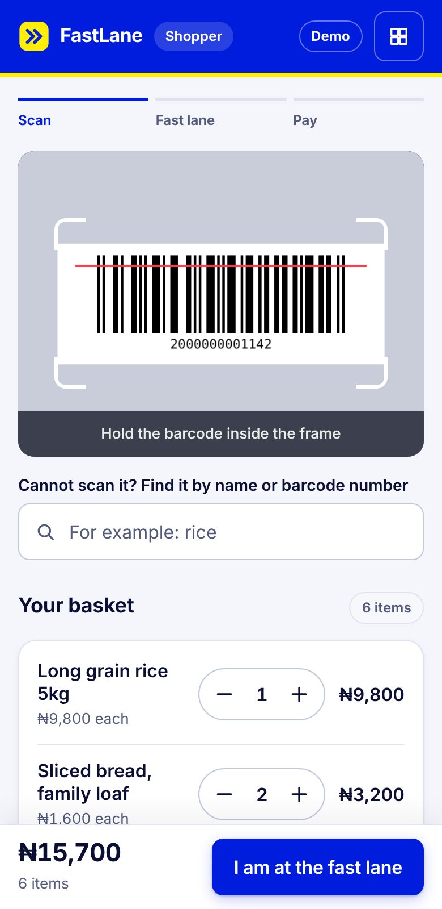

The queue is slow because every item is scanned at the till
On a busy night a handful of cashiers scan every basket one item at a time, while a long line of shoppers stands idle. FastLane puts that waiting time to work.
All the work happens at the till
- Cashiers scan every item, one at a time
- The whole queue waits with nothing to do
- The only fix is more tills and more cashiers
The work moves into the queue
- Shoppers scan their own basket while they wait
- The checker confirms a basket with one scan and a quick count
- Payment stays the same, so nobody learns a new app
Three steps for the shopper
A sign at the queue carries a code. Scanning it opens FastLane in the phone browser.
Scan each item
The phone camera reads each barcode and the total adds up. Items can also be found by name.
Show the pass
One tap turns the basket into a pass. It works once and expires after 15 minutes.
Pay at the fast lane
The checker scans the pass, confirms the basket and takes payment the usual way. The shopper gets a receipt on their phone for the door.
Every screen, from basket to receipt
These are the real screens from the working demo, not mock-ups.

In the store, or before you arrive
Scan while you wait
For shoppers already in the store with a full basket.
- Works for the whole product range
- Optional: the normal tills stay open
- Every shopper who uses it shortens the line for the rest
- No phone? Staff can scan the basket in the queue
Order ahead
For bread and fast-selling essentials, reserved from home.
- A short list, so packing takes moments
- Half-hour pickup times that give staff time to pack
- Collected at a counter with one scan
- No queue at all for the things people buy most
A one-branch pilot needs very little
FastLane is designed to sit beside the tills a store already runs, on the busiest nights of the week.
What the store provides
- The product listBarcodes, names and prices, exported from the till system.
- One or two fast lanesExisting tills, switched over on weekend nights.
- A phone for each checkerAny recent Android phone or iPhone with a camera.
- Signal in the queue areaShopper Wi-Fi helps where mobile data is weak.
What the store does not need
- No new hardwareNo kiosks, scales or smart trolleys.
- No app for shoppersIt opens in the phone browser from a printed sign.
- No change to how money is takenCash, POS and transfer go to the store exactly as they do now.
- No extra tillsThe checker works from a phone at an existing counter.
Built on the assumption that some people will try to cheat
Staff stay in the loop on every basket. The software tells them what to check.
Prices come from the store
A pass carries barcodes and quantities only. The checker prices the basket from the store list, so a shopper cannot change a price.
Guided spot checks
The checker must find up to three named items, always including the most expensive one, and count the basket.
Big baskets get a full count
Above 25 items the checker counts everything before the basket can be accepted.
A pass works once
A pass that has been paid or rejected is refused if it is shown again, and every pass expires after 15 minutes.
Unknown items block the lane
A barcode that is not on the store list sends the basket to a normal till.
Everything is recorded
Each basket, its items, the payment method and any rejection go into a sales file for reconciliation.
Walk through both sides
Use a laptop for the barcode sheet and a phone for the shopper view. Products and prices in the demo are samples.
What this demo does not do yet
- It runs without a serverA used pass is remembered on one checker phone. A pilot needs a shared server so every lane sees the same list.
- Order-ahead payment is simulatedNo money moves. A live version takes real payment before an order is confirmed.
- It uses sample productsA pilot loads the store list and reports sales back to the till system.
A sensible first pilot
- One branch, weekend nightsRun it where and when the queue is worst.
- Measure the waitTime the queue before and during the pilot, and count how many shoppers choose the fast lane.
- Audit the basketsFully re-scan a sample of fast-lane baskets each night to measure losses.
Talk to us about a pilot
One branch. Four weekends. A shorter queue.
The pilot proposal sets out what the store provides, what we provide and what gets measured.